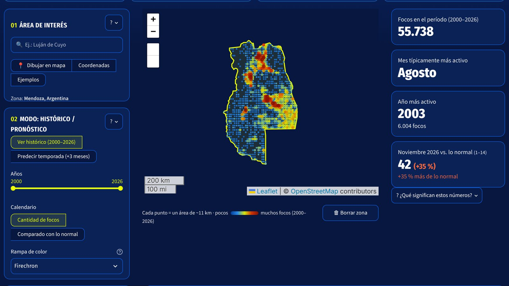
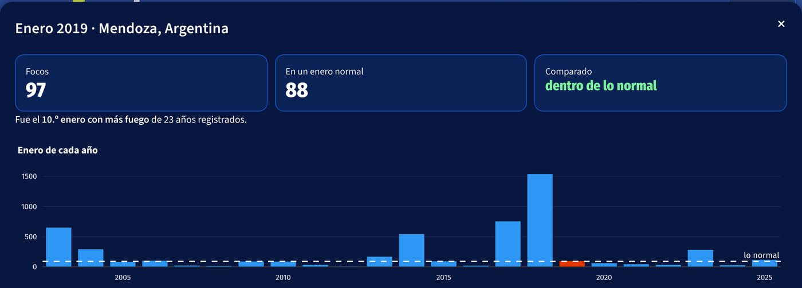
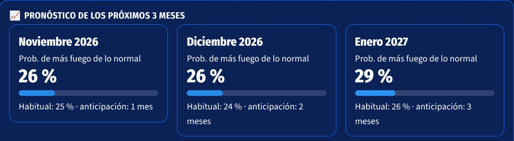
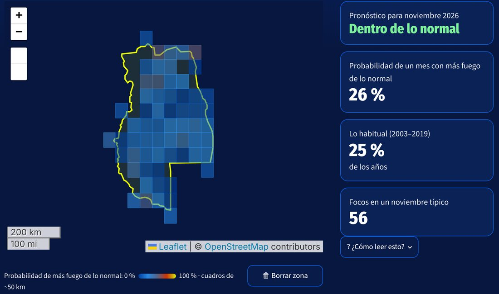
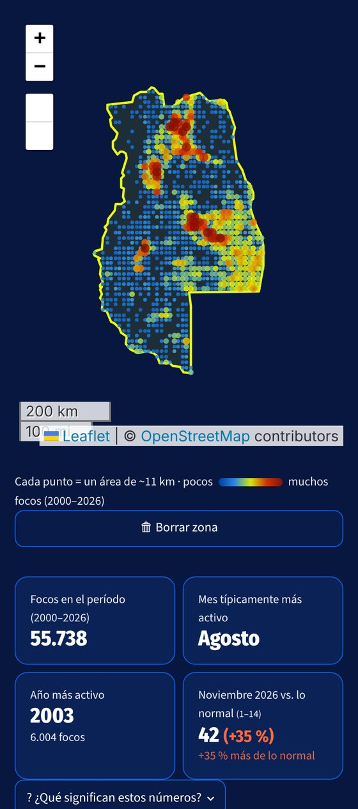

NASA Space Apps Challenge 2026 · Mendoza · Equipo BurnInHell
Firechron convierte 25 años de satélites de la NASA en un calendario del fuego que cualquiera entiende: buscás tu lugar y ves su historia, cómo viene este mes y qué se espera para la próxima temporada.
El problema
Desde el año 2000 la NASA mira el fuego desde el espacio. Pero en 2012 llegó un satélite nuevo, mucho más fino, que ve el doble de fuegos chicos. Si se juntan los datos tal cual, parece que los incendios explotaron de un año para el otro.
Firechron corrige esa diferencia región por región y arma una sola historia del fuego, comparable de punta a punta.
Error menor al 2 % comprobado con años independientesCómo se usa
Escribí un departamento, una ciudad o un parque —por ejemplo, «Luján de Cuyo»— o dibujalo en el mapa. Al instante ves cuánto se quemó, en qué meses y qué año fue el peor.

El calendario muestra 25 años de un vistazo: azul es poco fuego, rojo es mucho. Tocás un cuadrito y te dice si fue normal, cuántas veces más de lo habitual y qué decían los diarios ese mes.

El modo pronóstico estima, para los próximos 3 meses, la probabilidad de que haya más fuego de lo normal en cada zona de ~50 km. Una alerta temprana para prepararse.

Para quién
No es lo mismo que el fuego te agarre de sorpresa que tener los recursos listos cuando hacen falta.
Saber qué zonas y qué meses son de mayor riesgo para tener brigadas, agua y equipos listos antes de que empiece la temporada, y no perder horas clave.
Planificar viajes y excursiones según la época: evitar los meses en que un destino suele quemarse más.
Estudiar con una serie de 25 años coherente si los incendios empiezan antes, duran más o se mueven de lugar con el cambio climático.
Detectar patrones de quema, muchas veces causados por personas, y anticipar las épocas críticas en cada región.
Mostrar con datos si lo que pasa hoy es fuera de lo común comparándolo con 25 años de historia, y descargar todo en CSV.
Pronóstico estacional
Un modelo de inteligencia artificial aprendió de 17 años cómo la historia reciente del fuego, el clima y El Niño anticipan una temporada más activa. Lo pusimos a prueba con 2023–2025, años que nunca vio.
Porcentaje de aciertos al decir si un mes tendrá más o menos fuego de lo normal, en cuadros de ~50 km de toda Sudamérica (test 2023–2025). Es una orientación para prepararse, no una certeza.


En tu bolsillo
Ciencia abierta
Detecciones de fuego de los sensores MODIS (Terra y Aqua) y VIIRS (Suomi NPP y NOAA-20), 2000–2026.
ERA5-Land (Copernicus, CC-BY 4.0) e índice ONI de NOAA, para el pronóstico.
Todo el proceso es reproducible y está publicado en GitHub. Usamos Claude (Anthropic) como asistente de programación y redacción, con revisión del equipo.
Equipo BurnInHell · Mendoza, Argentina
Seis personas, un fin de semana y 25 años de datos de la NASA, para el Space Apps Challenge 2026.